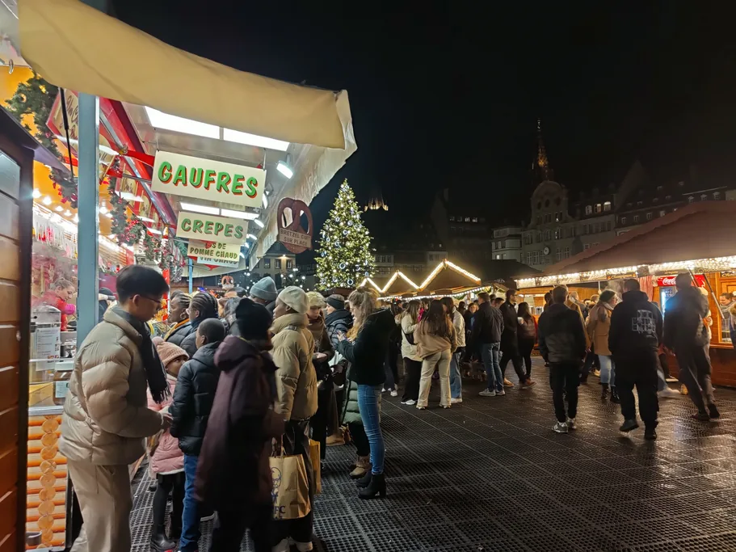
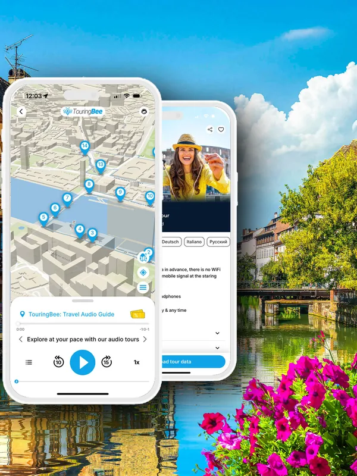
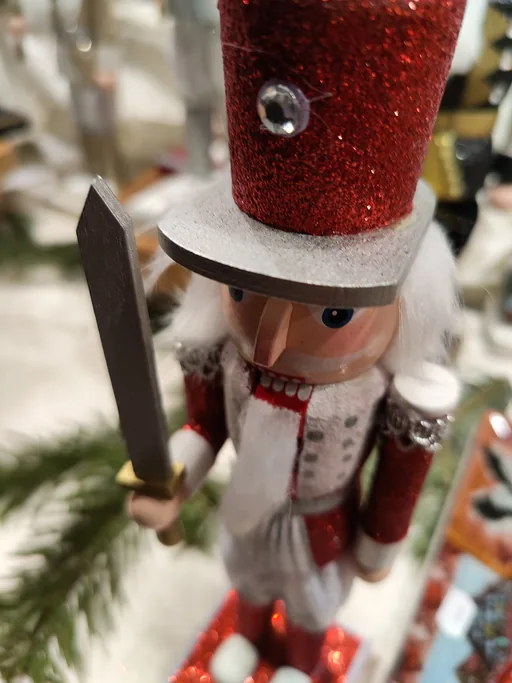
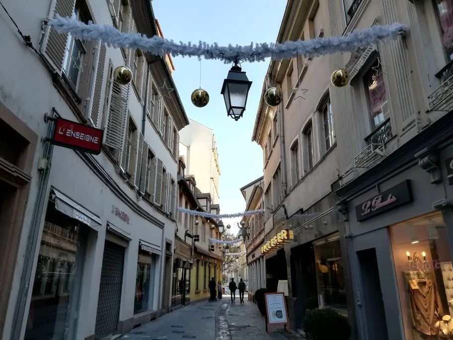
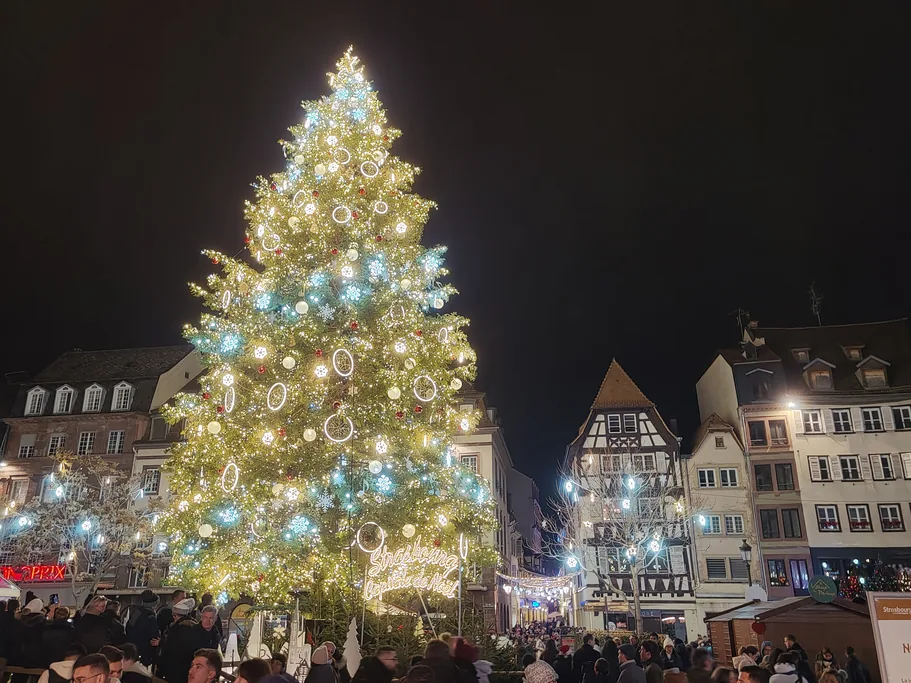

Still planning the whole trip? Start with our complete guide to Strasbourg, then come back here for the Christmas market details.
Most pages get one thing wrong immediately. There is no single Christmas market here. There are a dozen, spread across the Grande Île, each with its own character — one for food, one for craft, one for children, one that is a wall of imported tat. Knowing which is which is the difference between a good evening and two hours of elbows.
This page owns the market as an experience: what to eat, what is worth carrying home, how to survive the crush. Daytime still belongs to the city — cathedral, astronomical clock and tower platform all keep normal winter hours through December, and the TouringBee self-guided audio tour of Strasbourg covers that half in 33 stops.
Dates, hours and the stall map live on the Christmas market dates page; the 1570 story on why Strasbourg is the Capital of Christmas. This page assumes you are already coming.
At a glance
- The market — running since 1570, the oldest in France; around 2 million visitors and some 300 chalets
- 2026 dates — not published yet. It always runs from the last week of November to 24 December
- Where — a dozen squares on the Grande Île, the UNESCO island centre, about 1 km across
- The tree — Place Kléber; the original market sat on Place Broglie
- Worst crush — the last weekend before Christmas, and Saturday afternoons from mid-December
- Best hours — weekday mornings, and the whole first week
- Cathedral in December — nave free, 08:30–11:15 and 12:45–17:45; clock €3 at 12:30; platform €10, last winter ascent around 17:15
- Beds — book months ahead. December rates run at roughly double the rest of the year
What it actually is
Two sentences of history, because another page owns this properly. In 1570 the Protestant city council replaced the Catholic Saint Nicolas fair with a Christkindelsmärik — the market of the Christ Child — held in the days before Christmas. It has run ever since, through wars and two changes of nationality, which makes it the oldest in France.
The shape of it is what matters to you. Around three hundred wooden chalets go up across a dozen squares, linked by streets strung with lights and shop fronts competing for a municipal decoration prize. No gate, no ticket — the market is simply what the city centre becomes for four weeks.
That spread is the point and the problem. You walk through a working medieval city rather than a fenced-off attraction — turn a corner off a food square and there is the cathedral, floodlit, the sandstone almost red. And so do two million other people, on the same kilometre of street.
Square by square: which one you actually want

Place Kléber — the tree. The largest square in the city and the one on every postcard. A single fir goes up in the middle, tall enough to line up with the roofs around it, lit from dusk, a family village of charity stalls at its base. Come for the tree, not for shopping.
Place Broglie — the original. Not really a square; a wide boulevard on the old horse market, in front of the Rhine Opera. This is where the Christkindelsmärik began, and it still feels most like an old-fashioned Christmas fair: long rows of chalets, ornaments, biscuits, sausages. If you have one hour, spend it here.
Place de la Cathédrale — the setting. Stalls packed under the west facade: the most dramatic backdrop the market has and, predictably, the tightest crowd. Come at 09:30 as they open and you get the same view without the shoulders.
Place du Château — the calm flank. Behind the cathedral, beside the Palais Rohan, with the Saint-Michel door where clock tickets are sold. Fewer stalls, more room, a way round the funnel.
Place Gutenberg — the guest region. The city invites a guest country or region to take a pavilion here, changing annually. It is the most genuinely different thing on the island: the crafts and food are not Alsatian and not repeated at four hundred other stalls. Check who this year's guest is.
The ones people miss. Place Benjamin Zix, in Petite France, is small, framed by half-timbered houses and canals, and the prettiest corner of the lot after dark. Place du Temple-Neuf and Place des Meuniers take a fraction of Kléber's traffic. At 18:00 on a Saturday they are breathable, and Kléber is not.
The exact set shifts a little each year; the current map is on the dates and locations page.

Strasbourg Self-Guided Audio Tour Instant access
What to eat and drink, and the mug that catches everyone out
Vin chaud is the centre of gravity: red wine heated with cinnamon, star anise, orange and sugar, ladled from a vat into a ceramic mug. It is why nobody in the crowd looks cold. The white version, made with Alsatian riesling, is the local variant and the better one — less sugary.
Now the mug. You pay for the drink and you pay a deposit on the mug — the consigne. Hand the empty back to a stall run by the same operator and you get it in cash. Don't, and you have bought a souvenir whether you meant to or not. Each year's mug carries a new design and date, which is why the city is relaxed about you keeping it. Two things go wrong: people wander off and forget, and people try to return it three squares away, to a stall that never took their money.
Bredele are the edible souvenir — Advent biscuits, dozens of doughs, sold loose by weight. Buy a mixed bag: they keep for weeks and survive a suitcase, which little else here does. Mannele, the brioche men with raisin eyes, have a short window around Saint Nicolas on 6 December. Pain d'épices runs all four weeks.
Then the hot savoury food, which is what you actually want at minus two. Tarte flambée fired in a wood oven at the stall and eaten standing up is unbeatable in the cold. Knack sausages in bread, onion tart, melted munster over potatoes. All of it is explained on what to eat in Strasbourg. One warning: stall food is priced for a captive crowd, and the restaurants two streets off the squares are cheaper and warmer.
What to buy that is actually made here

Be honest about the split. A large share of what sells at any European Christmas market is imported and identical from Strasbourg to Prague — light-up plastic, ornaments with a barcode on the back. Nobody flags it. For something genuinely Alsatian, look for these.
- Hand-blown glass baubles. Often blown at the stall. Thin, light, and the colour has depth rather than sitting on the surface.
- Soufflenheim pottery. Glazed earthenware from the potters' town in northern Alsace: kougelhopf ring moulds and baeckeoffe terrines. Working kitchen tools, not decoration — the fluted shape exists so heat reaches the middle of a heavy dough. Heavy. Worth it.
- Springerle moulds. Carved wooden or ceramic blocks that press a picture into anise biscuit dough. Very old, very Alsatian, good on a wall even if you never bake.
- Wooden toys. Turned and painted by hand in the Vosges and across the Rhine. Check the underside for a maker's name.
- Kelsch textiles. The traditional Alsatian check, red-and-white or blue-and-white, woven from local hemp and flax. Tablecloths, runners, napkins — flat, light, packs easily.
- Storks. The regional symbol, with a real story behind the cliché: Alsace was down to nine breeding pairs in 1974, and breeding programmes brought it back above eight hundred.
Two free tests: ask where it was made and watch how fast the answer comes; and walk the square first — if the same object is on six stalls, it came off a container, not a bench.
How to survive it

Where to Stay in December Books out early
The crowd is genuinely heavy. From mid-December the central squares stop being places you walk through and become places you are carried through. The worst is predictable: the last weekend before Christmas, and Saturday afternoon and evening from mid-December, when day-trippers pour in from across the Rhine and by TGV from Paris. Around Kléber at 18:00, progress is a few metres a minute.
The best hours are the boring ones. Weekday mornings, from opening until about noon, are quiet enough to look at a stall properly. The first week is the biggest win going: everything is built and lit, and the crowd is a fraction of what arrives later.
Security. Since 2018 the market has run behind a controlled perimeter. Barriers close the vehicle approaches, and pedestrians pass through checkpoints at the island entrances where bags are opened and looked into. Quick when it is quiet, slow when it is not. So: small bag, not a rucksack, and no suitcase — use the left luggage at the station. Arrangements are reviewed annually, so check before you travel.
Pickpockets. A dense, slow-moving crowd of distracted people holding hot drinks is an ideal working environment, and they know it. Back pockets and open handbags. Phone and wallet in a front pocket or an inside zip; bag across the body and in front of you in the crush.
Use the tram. The island is small, but "small" stops meaning much when the streets are full — Broglie to Petite France on foot at peak hour can take longer than the same trip on rails. Homme de Fer is a few steps from Place Kléber; Broglie has its own stop.
Beds are the real cost. Hotel stock fills months ahead for December and prices roughly double. If you are reading this in summer, that is a gift — book now. If it is already November, look at Kehl across the Rhine (twenty minutes on tram D), or Colmar and Sélestat, where rooms are cheaper and the last train back is later than you think. Check Strasbourg hotel availability before you fix dates.
Dress for standing still. You will be queueing, not walking, and that is much colder. Coat, hat, gloves, shoes for four hours on wet cobbles.
By train. Paris Gare de l'Est to Strasbourg runs 19 times a day; the fastest covers the 440 km in 1 h 45, average 2 h 16, from around €32 — check times and fares. December weekend seats sell out early and get expensive late. Frankfurt is 1 h 47 away, Basel 1 h 17, Colmar about 30 minutes — all workable bases.
On the day. The station is a ten-minute walk from Petite France, with left luggage.
Guided extras. Seasonal walks, tastings and village day trips sit among the tours in Strasbourg and day trips across Alsace.
A December day that works

The day is short and the market is an evening thing, so give the daylight to the city and the dark to the stalls. The sun is gone by about half past four — which is the point: the lights come on while it is still late afternoon.
09:00 — the cathedral, empty. The nave is free from 08:30, Monday to Saturday; Sundays and feast days it opens only at 14:00.
10:00 — the market before the crowd. Stalls opening, deliveries still arriving, and you can stand in front of one and actually look. Do Broglie and the cathedral square now; this is the shopping hour, and the streets between them are still quiet enough to walk the audio route.
11:30 — the astronomical clock. The €3 ticket is sold at the Saint-Michel entrance off Place du Château from 11:30, or at the cathedral shops before 11:00. Film at 12:00, apostles at 12:30; the nave shuts to everyone else 11:15–12:45 for exactly this. No advance booking exists, from anyone, anywhere.
13:00 — lunch indoors, off the squares. A winstub, a plate of choucroute, a chair.
14:30 — 330 steps. The platform is 66 m up, €10 adult and €6 reduced, on-site sale only, no queue system and no skip-the-line ticket. No more than 50 people go up at a time. In winter the last ascent is around 17:15 — check on the day, because the city and the cathedral list it slightly differently. Go up in the last of the light and watch the island switch on beneath you.
16:00 — the market, lit. Kléber for the tree, then west into Petite France, where Benjamin Zix and the canals do the thing that fills everyone's camera roll.
19:00 — dinner off the island, or a covered Batorama boat, which runs all year: Circuit Rouge, 1 h 10, €16.20 adult, pontoon A only in 2026. Tickets are timed, so buy in the morning.
The audio guide
The TouringBee City Tour of Strasbourg is a self-guided audio walk in the TouringBee app, iOS and Android. 33 stops, about 2.5 hours at your own pace, each recording one to three minutes, from Pont Kuss by the station to the cathedral.
From €9.99, one payment, one year of access, no subscription. Downloaded, it runs fully offline — which matters when two million people share the cell towers. Eight languages: English, French, German, Spanish, Italian, Portuguese, Polish, Russian.
How the map works: the app shows an offline GPS map with your position on it, so you always know where the next stop is. It does not play audio by itself. You press play when you reach each stop — handy when the stop is behind a wall of people.
"I'm a 64 year old female solo traveler. I walked around the city of Strasbourg whole day with this guide, taking a break at my hotel room as needed. It's flexible yet comprehensive. The length of recording at each of the 33 landmarks was just right (2–3 minutes)."
— Reiko_T, GetYourGuide, September 2025
Our app is rated 4.7 in the App Store and on Google Play.
Rated 5.0 from 7 verified reviews on Viator and GetYourGuide.
Get the Strasbourg audio tour — from €9.99
Coming for the market?
Give the daylight to the city and the dark to the chalets. The cathedral, the clock and the platform all run right through December.
Frequently asked questions
When is the Strasbourg Christmas market in 2026?
The 2026 dates are not published yet — as of late July 2026 the city still showed the 2025 edition. It always opens in the last week of November and always closes on 24 December.
Is the Strasbourg Christmas market free?
Yes. No ticket, no entry fee: it occupies the public squares of the Grande Île, so you pay only for what you eat, drink and buy.
How crowded does it get?
Very. Around two million people pass through in roughly four weeks, on an island about a kilometre across. The worst crush is the final weekend before Christmas and Saturday afternoons from mid-December. Weekday mornings and the opening week are far quieter.
What should I eat at the Strasbourg Christmas market?
Vin chaud — mulled red wine, or the white riesling version — plus tarte flambée fired at the stall, knack sausages, bredele biscuits by weight, gingerbread, and mannele brioche men around Saint Nicolas on 6 December.
What is the deposit on the mulled wine mug?
Vin chaud comes in a ceramic mug carrying a refundable deposit, the consigne, charged on top of the drink. Return the empty mug to a stall run by the same operator and you get it back in cash. Keep it and you have paid for a souvenir.
Where is the big Christmas tree in Strasbourg?
On Place Kléber, the largest square in the city. A single tall fir goes up in the middle each year and is lit from dusk. The original market is on Place Broglie, a few minutes away.
Can I still visit the cathedral and the clock during the market?
Yes. The nave keeps normal winter hours: free, 08:30–11:15 and 12:45–17:45 Monday to Saturday, 14:00–17:15 Sundays and feast days. The clock runs at 12:30, €3, entry from 11:30 at the Saint-Michel door. The platform is €10, last winter ascent around 17:15.
Continue exploring
- Complete guide to Strasbourg — the whole trip, trains, tickets and timings
- Christmas market dates and locations — dates, hours and the map of every square
- Why Strasbourg is the Capital of Christmas — 1570, the Christ Child, and the title
- Strasbourg in winter — the season after 24 December, when the crowds go
- What to eat in Strasbourg — the glossary behind every dish on the stalls
- One day in Strasbourg — the daytime itinerary the market slots into
Some links on this page are affiliate links (GetYourGuide, Booking.com, SNCF). If you book through them we may earn a small commission at no extra cost to you. It never affects what we recommend.